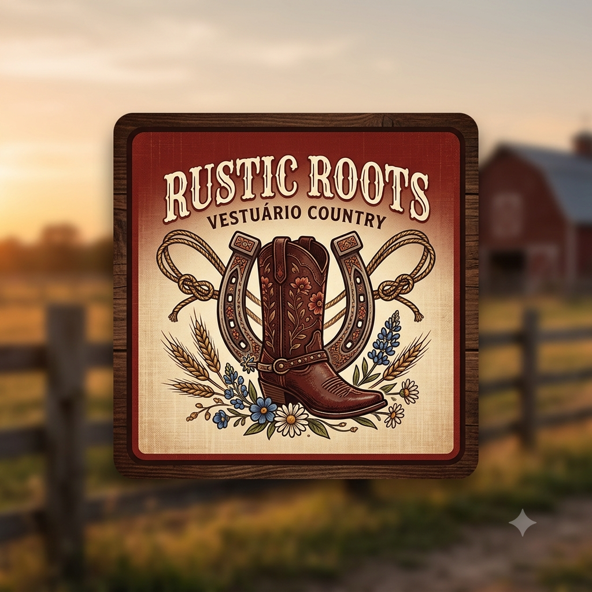

Meu primeiro postPor: Ingridy Ferreira
Boas-vindas ao meu novo site! Aqui vou compartilhar dicas de roupas country.
Vou compartilhar conhecimentos e dicas de roupas country

Meu primeiro postPor: Ingridy Ferreira
Boas-vindas ao meu novo site! Aqui vou compartilhar dicas de roupas country.